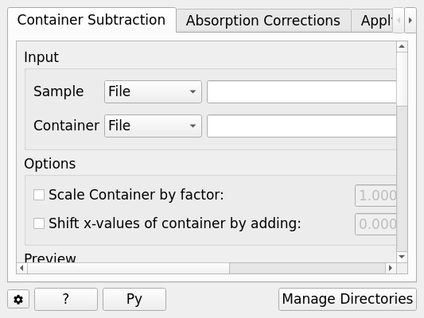
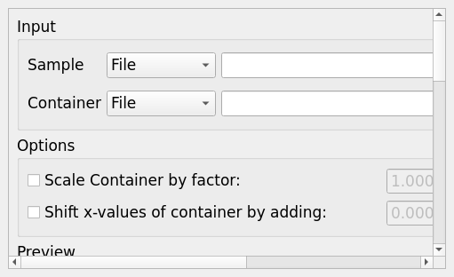
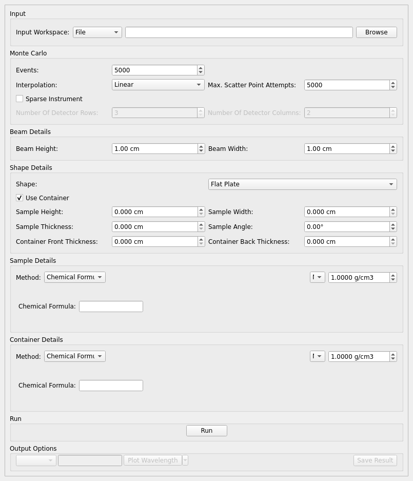
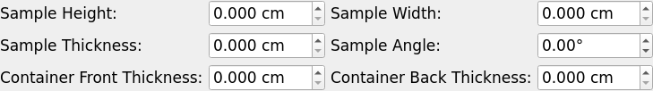
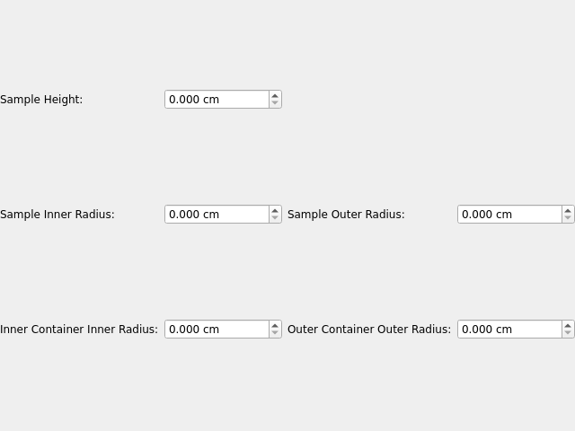
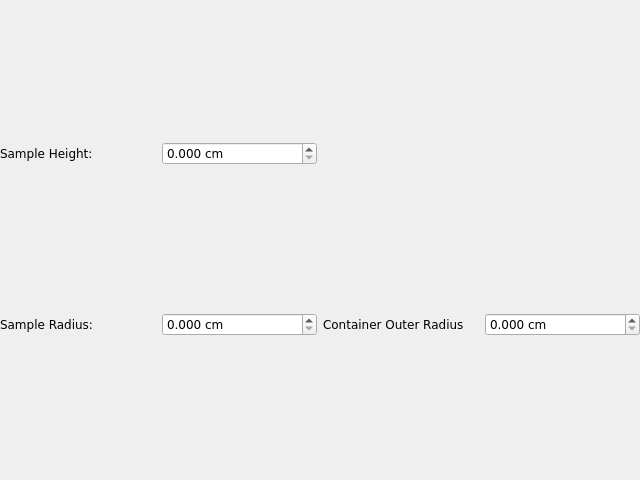
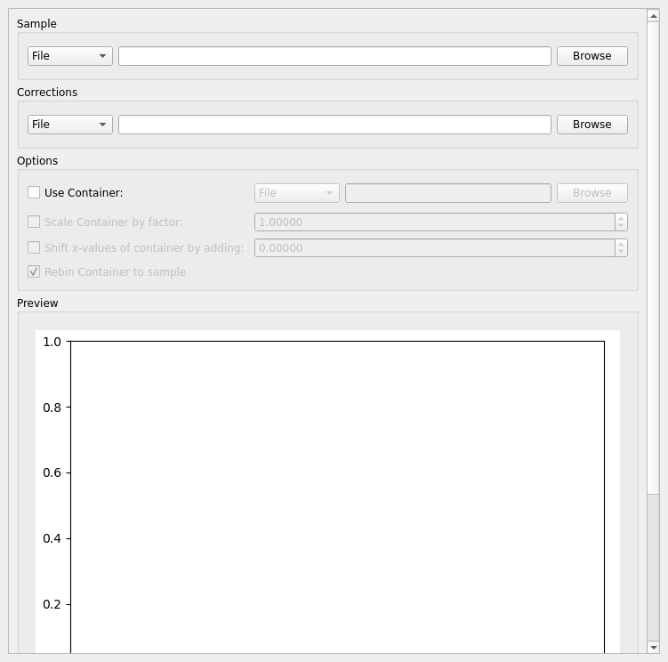

Inelastic Corrections#
Overview#
Provides correction routines for quasielastic, inelastic and diffraction reductions.
These interfaces do not support GroupWorkspace’s as input.
{kind=link}

Container Subtraction#
The Container Subtraction Tab is used to remove the container’s contribution to a run.
Once run the corrected output and container correction is shown in the preview plot. Note that when this plot shows the result of a calculation the X axis is always in wavelength, however when data is initially selected the X axis unit matches that of the sample workspace.
The input and container workspaces will be converted to wavelength (using ConvertUnits) if they do not already have wavelength as their X unit.
{kind=link}

Options#
- Sample
Either a reduced file (_red.nxs) or workspace (_red), an \(S(Q,\omega)\) file (_sqw.nxs) or workspace (_sqw), or an ELF file (_elf.nxs) or workspace (_elf) that represents the sample.
- Container
Either a reduced file (_red.nxs) or workspace (_red), an \(S(Q,\omega)\) file (_sqw.nxs) or workspace (_sqw), or an ELF file (_elf.nxs) or workspace (_elf) that represents the container.
- Scale Container by Factor
Allows the container’s intensity to be scaled by a given scale factor before being used in the corrections calculation.
- Shift X-values by Adding
Allows the X-values to be shifted by a specified amount.
- Spectrum
Changes the spectrum displayed in the preview plot.
- Plot Current Preview
Plots the currently selected preview plot in a separate external window
- Run
Runs the processing configured on the current tab.
- Plot Spectra
If enabled, it will plot the selected workspace indices in the selected output workspace.
- Open Slice Viewer
If enabled, it will open the slice viewer for the selected output workspace.
- Save Result
If enabled the result will be saved as a NeXus file in the default save directory.
Absorption Corrections#
In this tab a Monte Carlo implementation is used to calculate the absorption corrections.
{kind=link}

Options#
- Workspace Input
A reduced file (_red.nxs) or workspace (_red).
- Number Wavelengths
The number of wavelength points for which a simulation is attempted.
- Events
The number of neutron events to generate per simulated point.
- Interpolation
Method of interpolation used to compute unsimulated values.
- Maximum Scatter Point Attempts
Maximum number of tries made to generate a scattering point within the sample (+ optional container etc). Objects with holes in them, e.g. a thin annulus can cause problems if this number is too low. If a scattering point cannot be generated by increasing this value then there is most likely a problem with the sample geometry.
- Sparse Instrument
Whether to spatially approximate the instrument for faster calculation.
- Number Of Detector Rows
Number of detector rows in the detector grid of the sparse instrument.
- Number Of Detector Columns
Number of detector columns in the detector grid of the sparse instrument.
- Beam Height
The height of the beam in \(cm\).
- Beam Width
The width of the beam in \(cm\).
- Shape Details
Select the shape of the sample (see specific geometry options below). Alternatively, select ‘Preset’ to use the Sample and Container geometries defined on the input workspace.
- Use Container
If checked, allows you to input container geometries for use in the absorption corrections.
- Sample Details Method
Choose to use a Chemical Formula or Cross Sections to set the neutron information in the sample using the SetSampleMaterial algorithm.
- Sample/Container Mass density, Atom Number Density or Formula Number Density
Density of the sample or container. This is used in the SetSampleMaterial algorithm. If Atom Number Density is used, the NumberDensityUnit property is set to Atoms and if Formula Number Density is used then NumberDensityUnit is set to Formula Units.
- Sample/Container Chemical Formula
Chemical formula of the sample or container material. This must be provided in the format expected by the SetSampleMaterial algorithm.
- Cross Sections
Selecting the Cross Sections option in the Sample Details combobox will allow you to enter coherent, incoherent and attenuation cross sections for the Sample and Container (units in barns).
- Run
Runs the processing configured on the current tab.
- Plot Wavelength
If enabled, it will plot a wavelength spectrum represented by the selected workspace indices.
- Plot Angle
If enabled, it will plot an angle bin represented by the neighbouring bin indices.
- Save Result
Saves the result in the default save directory.
Shape Details#
Depending on the shape of the sample different parameters for the sample dimension are required and are detailed below.
Preset#
This option will use the Sample and Container geometries as defined in the input workspace. No further geometry inputs will be taken, though the Sample material can still be overridden.
Flat Plate#
{kind=link}

Flat plate calculations are provided by the IndirectFlatPlateAbsorption algorithm.
- Sample Width
Width of the sample in \(cm\).
- Sample Height
Height of the sample in \(cm\).
- Sample Thickness
Thickness of the sample in \(cm\).
- Sample Angle
Angle of the sample to the beam in degrees.
- Container Front Thickness
Thickness of the front of the container in \(cm\).
- Container Back Thickness
Thickness of the back of the container in \(cm\).
Annulus#
{kind=link}

Annulus calculations are provided by the IndirectAnnulusAbsorption algorithm.
- Sample Inner Radius
Radius of the inner wall of the sample in \(cm\).
- Sample Outer Radius
Radius of the outer wall of the sample in \(cm\).
- Container Inner Radius
Radius of the inner wall of the container in \(cm\).
- Container Outer Radius
Radius of the outer wall of the container in \(cm\).
- Sample Height
Height of the sample in \(cm\).
Cylinder#
{kind=link}

Cylinder calculations are provided by the IndirectCylinderAbsorption algorithm.
- Sample Radius
Radius of the outer wall of the sample in \(cm\).
- Container Radius
Radius of the outer wall of the container in \(cm\).
- Sample Height
Height of the sample in \(cm\).
Apply Absorption Corrections#
The Apply Corrections tab applies the corrections calculated in the Calculate Monte Carlo Absorption tab of the Inelastic Data Corrections interface.
This uses the ApplyPaalmanPingsCorrection algorithm to apply absorption corrections in the form of the Paalman & Pings correction factors. When Use Container is disabled only the \(A_{s,s}\) factor must be provided, when using a container the additional factors must be provided: \(A_{c,sc}\), \(A_{s,sc}\) and \(A_{c,c}\).
Once run the corrected output and container correction is shown in the preview plot. Note that when this plot shows the result of a calculation the X axis is always in wavelength, however when data is initially selected the X axis unit matches that of the sample workspace.
The input and container workspaces will be converted to wavelength (using ConvertUnits) if they do not already have wavelength as their X unit.
The binning of the sample, container and corrections factor workspace must all match, if the sample and container do not match you will be given the option to rebin (using RebinToWorkspace) the sample to match the container, if the correction factors do not match you will be given the option to interpolate (SplineInterpolation) the correction factor to match the sample.
{kind=link}

Options#
- Sample
A reduced file (_red.nxs) or workspace (_red).
- Corrections
The calculated corrections workspace produced from one of the preview two tabs.
- Geometry
Sets the sample geometry (this must match the sample shape used when calculating the corrections).
- Use Container
If checked allows you to select a workspace for the container in the format of either a reduced file (_red.nxs) or workspace (_red) or an \(S(Q, \omega)\) file (_sqw.nxs) or workspace (_sqw).
- Scale Container by factor
Allows the container intensity to be scaled by a given scale factor before being used in the corrections calculation.
- Shift X-values by Adding
Allows the X-values of the container to be shifted by a specified amount.
- Rebin Container to Sample
Rebins the container to the sample.
- Spectrum
Changes the spectrum displayed in the preview plot.
- Plot Current Preview
Plots the currently selected preview plot in a separate external window
- Run
Runs the processing configured on the current tab.
- Plot Spectra
If enabled, it will plot the selected workspace indices in the selected output workspace.
- Open Slice Viewer
If enabled, it will open the slice viewer for the selected output workspace.
- Save Result
If enabled the result will be saved as a NeXus file in the default save directory.
Categories: Interfaces | Inelastic